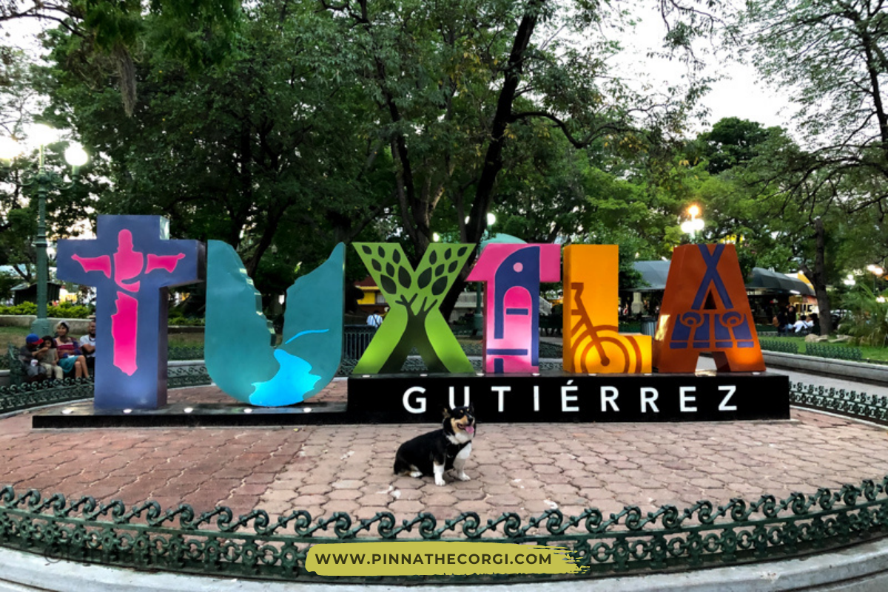
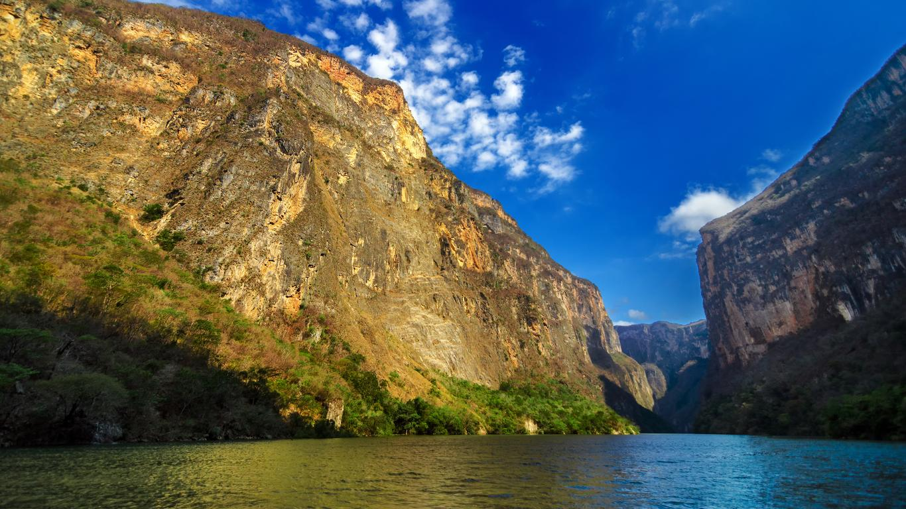

CHIAPAS Y SU CAPITAL
TUXTLA GUTIERRES LA CAPITAL DE CHIAPAS
TUXTLA COMO BIEN DICE EL TEMA , ES LA CAPITAL DE CHIAPAS ,ES UN AMPLIO Y CALUROSO LUGAR LLENO DE MUCHOS LUGARES TURISTICOS ,PROMOVIENTE DE LAS LENGUAS MATERNAS ,DICHO POR SER LA CAPITAL DE CHIAPAS EN UNACIUDAD GRANDE CON MUCHOS LUGARES PARA VISITAR COMO POR EJEMPLO:
- EL CAÑON DEL SUMIDERO
- LOS PARQUES DE TUXTLA
- LA FERIA DE CHIAPAS O CONOCIDA COMUNMENTE POR LA FERIA DE TUXTLA
- LOS MUSEOS DE TUXTLA
EL CAÑÓN DEL SUMIDERO ES UNA MAJESTUOSA GARGANTA CON ELEVADAS PAREDES ROCOSAS DE HASTA MIL METROS DE ALTURA, SITUADA A 5 KM DE LA CIUDAD DE TUXTLA GUTIÉRREZ, EN TERRITORIO DEL MUNICIPIO CHIAPANECO DE CHIAPA DE CORZO. POR EL FONDO DEL CAÑÓN DISCURRE EL TEMPESTUOSO RÍO GRIJALVA, UNO DE LOS GRANDES CAUDALES DE MÉXICO. A NIVEL DEL RÍO ES POSIBLE ADMIRAR LA FAUNA TÍPICA DE LAS ZONAS FLUVIALES SELVÁTICAS, COMO PRIMATES, COCODRILOS, VISTOSAS AVES Y OTROS ANIMALES.
EN LA MEDIDA QUE SE ASCIENDE POR LAS ALTAS PAREDES NATURALES, LA BIODIVERSIDAD VA CAMBIANDO, ENCONTRÁNDOSE VEGETACIÓN ALPINA Y AVES RAPACES EN LOS PUNTOS MÁS ALTOS. A LO LARGO DEL CAÑÓN HAY MIRADORES PARA FACILITAR LA OBSERVACIÓN A LOS TURISTAS, QUIENES TAMBIÉN PUEDEN ADMIRAR EL PAISAJE DESDE LAS LANCHAS QUE CIRCULAN POR EL GRIJALVA.
LA CAPITAL Y CIUDAD MÁS POBLADA DE CHIAPAS CUENTA CON ACOGEDORES PARQUES, IDEALES PARA DESCANSAR, CAMINAR, LEER, PASAR BUENOS RATOS EN FAMILIA Y DISFRUTAR DE ALGUNOS ESPECTÁCULOS. EL PARQUE DE LA MARIMBA TOMA EL NOMBRE DE UN POPULAR INSTRUMENTO DE MÚSICA FOLCLÓRICA CHIAPANECA, CUYO MODELO DE DOBLE TECLADO FUE INVENTADO EN EL ESTADO HACE MÁS DE 120 AÑOS.
EN EL KIOSCO DE ESTE PARQUE, LOS LUGAREÑOS Y LOS TURISTAS SE REÚNEN AL ATARDECER PARA ESCUCHAR Y BAILAR LAS ALEGRES INTERPRETACIONES DE LAS BANDAS MUSICALES DE MARIMBAS. OTROS HOSPITALARIOS PARQUES DE TUXTLA GUTIÉRREZ SON EL PARQUE MORELOS BICENTENARIO, EL PARQUE DE LA JUVENTUD Y EL PARQUE JOYO MAYU.
EL EVENTO FESTIVO MÁS IMPORTANTE, DIVERTIDO Y CONCURRIDO DEL ESTADO ES LA FERIA DE CHIAPAS O FERIA DE TUXTLA, QUE SE CELEBRA EN LA CAPITAL ESTATAL ENTRE FINALES DEL MES DE OCTUBRE Y COMIENZOS DE NOVIEMBRE. EN LA FERIA HAY ESPECTÁCULOS MUSICALES, BAILES, EVENTOS FOLCLÓRICOS, EXPO DE PRODUCTOS AGROPECUARIOS E INDUSTRIALES, MUESTRAS DEL ARTE CULINARIO Y DE LA ARTESANÍA LOCAL, ACTOS CULTURALES, COMPETENCIAS DEPORTIVAS Y PALENQUES. LA FERIA DE CHIAPAS ES COMPARADA EN COLORIDO Y VARIEDAD CON LA FERIA DE AGUASCALIENTES Y CON LA DE TEXCOCO EN EL ESTADO DE MÉXICO.
MUSEO DEL NIÑO EN TUXTLA GUTIÉRREZ BLVD. SALOMÓN GONZALEZ BLANCO ESQ. CON PASO LIMÓN AMPLIACIÓN LAS PALMAS CP 29045, TUXTLA GUTIÉRREZ, CHIAPAS MUSEO DE LA MARIMBA AV. CENTRAL Y 9A. PONIENTE NORTE 123 CENTRO MUSEO JARDÍN BOTÁNICO FAUSTINO MIRANDA CALZ. DE LOS HOMBRES ILUSTRES S/N FRACC. PARQUE MADERO MUSEO DEL CAFÉ 2ª ORIENTE NORTE 236 CENTRO MUSEO DEL COCODRILO CALZ. CERRO HUECO S/N COL. EL ZAPOTAL CP 29000, TUXTLA GUTIÉRREZ, CHIAPAS
ESTOS SON ALGUNOS LUGAREAS DE TUXTLA QUE TIENES QUE VISITAR
